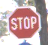
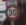
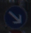

🚦 Traffic Sign Classifier
Live demo by Noorullah Zamindar — a CNN trained on the German Traffic Sign Recognition Benchmark (GTSRB, 39,209 images, 43 classes). Validation accuracy 0.9719. Runs entirely in your browser: your photo never leaves your device.
Tap to upload a traffic sign photo
or drag & drop it here
or drag & drop it here



…or try a sample above with one tap
Loading the model (about 12 MB, once)…
Top 3 predictions
Model: Noor-Khan/traffic-sign-classification on Hugging Face
Eval data: Noor-Khan/traffic-sign-eval-split — 7,841 labelled images, 43 classes
Code: Traffic-Sign-Classification on GitHub
Eval data: Noor-Khan/traffic-sign-eval-split — 7,841 labelled images, 43 classes
Code: Traffic-Sign-Classification on GitHub